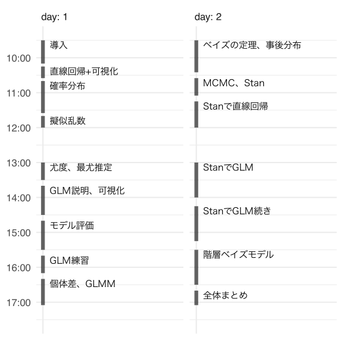

統計モデリング概論 DSHC 2023
- 講師: 岩嵜航 (東北大学生命科学研究科)
- 日程: 2023-08-23&30 09:30–17:30
- 場所: zoom.us

実行環境の準備
DSHC 2023 参加者はほかの講義で使っている環境をなるべくそのまま使う。
いくつかのパッケージを追加するため
preparation.ipynb をダウンロードして実行。
ほかの講義を受講していない私が追いつくために実行したコマンド (macOSに講義用の仮想環境を用意する一例として):
brew install pyenv
env PYTHON_CONFIGURE_OPTS="--enable-shared" pyenv install 3.7.13
# Rscript -e 'reticulate::install_python("3.7.13")'
$(pyenv prefix 3.7.13)/bin/python3 -m venv ~/.virtualenvs/dshc2023
source ~/.virtualenvs/dshc2023/bin/activate
pip3 install -U setuptools pip wheel
pip3 install -r requirements.txt
jupyter-notebook preparation.ipynb
DSHC 2023 に参加せずこの資料に辿り着いた人はわざわざ古い3.7を入れる必要はない。
最新版(≥3.11)をインストールする。
requirements.txt の代わりに個別指定で
pip3 install -U seaborn scikit-learn jupyter
を実行する。
演習資料
preparation.ipynb2-distribution.ipynb3-likelihood.ipynb4-glm.ipynb6-bayesian.ipynb7-stan.ipynb8-hbm.ipynb
講義資料
リンク先では←→キーで戻る・進む。
- 2023-08-23 09:30 | 導入
- 2023-08-23 10:30 | 直線回帰、確率分布、擬似乱数生成
- 2023-08-23 13:00 | 尤度、最尤推定
- 2023-08-23 14:00 | 一般化線形モデル(GLM)
- 2023-08-23 16:00 | 個体差、一般化線形混合モデル(GLMM)
- 2023-08-30 09:30 | ベイズの定理、事後分布、MCMC
- 2023-08-30 13:00 | StanでGLM
- 2023-08-30 15:00 | 階層ベイズモデル(HBM)